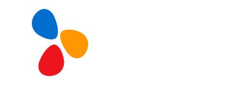
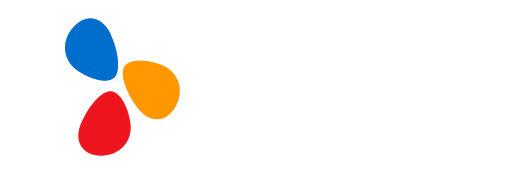

00. 소개
📌 “2020 DREAM_AI Open Challenge”은 CJ올리브네트웍스와 한국광기술원이 출제한
문제 중에서 참가팀이 풀고자 하는 문제를 자유롭게 선택하여 솔루션을 발굴하고자
합니다.
01. 참가신청 안내
가. 다음 3가지 문제 중에서 원하는 하나의 문제를 선택하여 진행합니다.
| 1번 | 드라마 배경음악 자동 생성/탐색 |
| 2번 | 가상 피팅(Virtual fitting) |
| 3번 | 전력 수요 예측 |
나. 참가신청서 제출마감은
10월 22일(목) 24시 정각까지입니다.
02. 예선 참가팀 선정 및 사전교육
가.
서류 심사 및 예선 참가팀 선정: 2020년 10월 23일(금)에 홈페이지 및 개별 안내
(※ 일정은 변동될 수 있음.)
나. CJ올리브네트웍스 사전교육(온라인): 10월 27일(화) ~ 10월28일(수)
다. 한국광기술원 사전교육(온라인): 10월 29일(목) ~ 10월 30일(금)
03. 예선 진행
가. 참가 팀별로 대회규칙을 준수해서 예선을 진행해야 합니다.
나. 해결한 문제는 제출 마감일(추후 공지)까지 제출해야 하며, 마감일 전까지는
언제든지 수정할 수 있습니다.
다. 예선 진행(온라인): 10월 27일(화) ~ 11월 13일(금)
04. 예선 심사 및 본선 진출팀 선정
가. 전문 심사위원회가 제출된 각 팀별 솔루션을 심사하여 본선진출 8팀을
선정합니다.
나. 본선 진출팀: 2020년 11월 20일(금)에
홈페이지 및 개별 안내
(※ 일정은 변동될 수 있음.)
05. 해커톤 참가신청서 작성시 주의사항
∙ 가. 참가인원 구성은 최소 1인부터 최대 4명까지 가능하며, 팀당 1개의 아이디로
신청
06. 참가신청 및 기타 문의
∙ 광주과학기술원 인공지능연구소 담당자 e-mail:
info@giai.kr
(e-mail only)
Q1: 드라마 배경음악 자동 생성/탐색
- 드라마 1편에는 약 10~20여개의 배경음악이 사용되고 있습니다. 모든 드라마에는
음악감독이 있어서 배경음악을 삽입하고 있지만, 모든 배경음악을 다 작곡하기는
어려우므로 저작권이 있는 음악을 활용하고 있습니다. 그러나 전세계 모든 곡의
저작권을 다 파악할 수는 없으므로 활용이 가능한 음원인지 아닌지를 판단하기가 너무
어렵고 비용도 많이 들어갑니다. 이에, 드라마 내의 각 장면(Scene)에 저작권료가
없는 AI 배경음악을 삽입하는 기술을 개발하고자 합니다.
(※ AI 작곡도
가능하며, 또는 License-free 음원 탐색도 가능함.)
- 무료로 오픈된 웹 드라마 파일 (2개 제공)
- 총 10개 장면에 대해서 장면 당 0~10점, 총 100점 만점으로 평가.
- 산출물
1) 알고리즘 구조에 대한 설명서 (자유 양식)
2) 음악 파일은 mid 형식으로 출력
Q2: 가상 피팅(Virtual fitting)
- 코로나 바이러스가 쉽게 수그러들지 않으면서 온라인으로 의류를 구매하는 고객은
더욱 늘어나고 있습니다. 그러나, 온라인 의류 쇼핑몰의 판매는 늘어난 반면에,
반품율은 20% 수준으로 줄지 않고 있습니다. 온라인 의류 쇼핑몰의 반품율을
줄여보고자 온라인 쇼핑몰의 의류 상품을 소비자가 가상으로 입어볼 수 있도록
Virtual fitting 기술을 개발하고자 합니다. GAN, 강화학습 등의 방법을 활용하면
Virtual fitting을 어렵지 않게 구현할 수 있으나, 반팔/긴팔의 차이, 넥 라인의
차이, 피부색의 차이 등으로 인하여 자연스럽지 않은 결과물이 나오게 됩니다. 이에,
본 주제를 통해 AI가 Virtual fitting을 자연스럽게 수행할 수 있는 방법을
찾아보고자 합니다.
- 온라인 쇼핑몰의 의류 이미지를 소비자가 가상으로 입어보도록 하는 Virtual
fitting 알고리즘 개발
- 데이터
1) 학습데이터: 약 1,000여 장의 여성 의류(모델샷)
이미지
2) 필요 시, 참가팀에서 개별적으로 확보한 이미지 활용
가능
- 평가지표: 10장의 모델샷 이미지를 가상 소비자 이미지에 fitting
1) 핏 정확도 (0~4점)
2) 넥 정확도 (0~3점)
3) 포즈 정확도 (0~3점)
- 산출물: 알고리즘 구조에 대한 설명서 (자유 양식)
Q3: 전력수요 예측
- 기존 전력 사용 기록과 기상 데이터 등 공공 데이터를 이용하여 각 가정 및 회사의
시간별, 일별, 월별 전력 사용량을 예측합니다. 2018년 7월1일부터 2018년 11월
30일까지의 에너지 사용량을 예측합니다.
[제공 데이터]
1. train.csv
- 국내(인천지역) 특정 지역의 모 아파트 및 모 상가의 전력사용량
(1300호)
- 2016년 7월 26일 11시 ~ 2018년 6월 30일 24시까지 시간 당 전력사용량
2. test.csv
- 국내(인천지역) 특정 지역의 모 아파트 및 모 상가의 전력사용량
(200호)
(※ train의 세대와 다른 세대)
- 2017년 7월 1일 00시 ~ 2018년 6월 30일 24시까지 시간 당
전력사용량
[결과물]
- 2018년 7월 1일 00시부터 24시까지, 24시간 ‘시간당 전력사용량’ (24개)
- 2018년 7월1일부터 7월10일까지, 10일간 ‘일간 전력사용량’ (10개)
- 2018년 7월부터 11월까지, 5개월간 ‘월간 전력사용량’ (5개)
- 학습 데이터셋과 함께 제공되는 submission.csv 양식에 맞춰 제출
1. 등록 관련
Q. 등록 후 참가신청서를 다시 제출할 수 있습니까?
A. 예, 마감일(10월16일) 전까지 몇 번이든 할 수 있습니다.
2. 평가 피드백 관련
Q. 예선 및 본선에서 제출한 솔루션이 우승하지 못한 이유에 대한 설명이
제공되나요?
A. 신청서 및 최종 솔루션 제출은 여러 검토자에 의해 평가되고, 그들의 의견은
문서화됩니다. 필요한 경우, 주최자에게 문의할 수 있습니다.
3. 팀 구성 관련
Q. 참가팀의 최소 및 최대 팀원수는 몇 명입니까?
A. 팀원은 최소 1명에서 최대 4명까지(팀대표 포함) 인원으로 구성할 수 있습니다.
Q. 예선 종료 시 제출한 솔루션은 누가 소유합니까?
A. 참가팀이 솔루션을 소유합니다. 하지만, 모든 참가팀은 평가 등을 위해서 솔루션을
주최측에 공유해야 합니다. 그리고, 주최측은 본 종목 우승자의
애플리케이션/솔루션을 홍보 등의 목적으로 사용할 권리가 있습니다.
Q. 본 해커톤의 참가 자격은 어떻게 됩니까?
A. 인공지능에 관심 있는 누구나 참가 가능합니다.
※ 본 해커톤은 학교, 대학, 연구소의 연구원, 학자, 신생 기업 및 산업체에 모두
개방되어 있습니다.